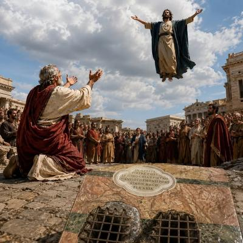

Cuando los creyentes presentan a Jesús como el único personaje del mundo antiguo capaz de realizar «milagros», suelen olvidar (u omitir) un detalle importante: el Oriente Medio del siglo I estaba lleno de profetas, exorcistas, curanderos, adivinos y magos, a quienes sus seguidores atribuían «poderes sobrenaturales». Así que Jesús no apareció en un escenario vacío, sino en un ambiente donde abundaban los supuestos hacedores de prodigios.


Y uno de los casos más interesantes es Simón el Mago, también conocido como Simón de Gitta. Su nombre aparece en el libro de Hechos de los Apóstoles (Hechos 8:9-24), pero también es mencionado por escritores cristianos como Justino Mártir, Ireneo de Lyon e Hipólito de Roma[1]. No se trata, por tanto, de un personaje inventado en tiempos modernos, sino de una figura que tuvo cierta relevancia en la literatura cristiana primitiva.
Sin embargo, Simón no era el único supuesto taumaturgo de la época. Circulaban también personajes como Dositeo, Menandro o Apolonio de Tiana, a quienes la tradición atribuía toda clase de maravillas: volar, levitar, atravesar paredes, sanar enfermos o «expulsar demonios». Jesús —en caso de haber existido— habría compartido ese mismo escenario cultural, donde además según los Evangelios, caminaba sobre el agua, convertía el agua en vino, calmaba tormentas, multiplicaba alimentos, y hasta resucitaba muertos.
Por supuesto, visto desde el siglo XXI, este panorama recuerda más a un festival de ilusionismo que a un registro histórico. Sin embargo, en aquella época era perfectamente normal. En un mundo donde la mayoría de la población era analfabeta y las noticias circulaban de boca en boca, los relatos extraordinarios crecían con enorme facilidad. Y cuanto más espectacular era el milagro, mayor prestigio adquiría el líder hacedor de portentos. No era pues, un fenómeno exclusivo del cristianismo, sino una característica del contexto cultural.
Relata Hechos de los Apóstoles que después de la fiesta de Pentecostés o Shavuot, la recién constituida secta de quienes creían que había existido Jesús el Nazareno, a quien consideraban el «Cristo», es decir, el Mesías esperado por los judíos, era dirigida por algunos que afirmaban haber sido sus discípulos directos, y que se autodenominaban «los apóstoles», quienes habían decidido dispersarse por varias regiones y ciudades, anunciando la buena nueva, es decir, «el evangelio», la buena noticia de que Jesús «el Cristo» regresaría a poner en orden todo (lo que suponía el fin del dominio romano, aunque no se dijera abiertamente). Pero la predicación no parecía suficiente, por lo que el mismo libro afirma que además los apóstoles realizaban «señales y prodigios», es decir, «actos de magia» o ilusionismo, para convencer a la población de que su mensaje era verdadero. Obviamente, que alguien realice un espectáculo sorprendente no demuestra que sus afirmaciones sean ciertas. David Copperfield hizo desaparecer la Estatua de la Libertad, y nadie concluyó por ello que fuera un enviado celestial de quien había que escuchar un mensaje divino. Sin embargo, en el siglo I la lógica era diferente.
El relato bíblico cuenta que Felipe llegó a Samaria realizando exorcismos y curaciones, y que expulsaba «espíritus inmundos» —probablemente enfermedades psíquicas o neurológicas que hoy recibirían explicaciones médicas—, además de sanar paralíticos y cojos (Hechos 8:5-8), algo que nunca más se ha logrado. En fin, todo parecía marchar bien, hasta que apareció un competidor: una celebridad local que ya existía en Samaria: Simón el Mago. La Biblia dice que «ejercía la magia en aquella ciudad», y que «oían atentamente todos, desde el más pequeño hasta el más grande» (Hechos 8:9-13). Es decir, Felipe no llegó a un territorio sin oferta de prodigios, sino a un lugar donde otro especialista en supuestos «fenómenos sobrenaturales», ya gozaba de gran prestigio.
Pero sorprendentemente, el propio Simón quedó impresionado por «las señales y grandes milagros» de Felipe, a quien comenzó a ver como un gran maestro en artes mágicas, por lo que decidió unirse a su movimiento —sometiéndose al ritual del bautismo— y comenzar a seguirlo (con la obvia intención de aprender sus habilidades).
Pero más adelante llegaron también desde Jerusalén Pedro y Juan, e introdujeron una nueva técnica: la «imposición de manos», por medio de la cual los creyentes entraban en una especie de trance temporal cuando «recibían el Espíritu Santo» (Hechos 8:14-17). Y Simón quiso aprenderla, por lo que ofreció dinero a los apóstoles para que se la enseñaran. Sin embargo, Pedro reaccionó con dureza: «Tu dinero perezca contigo, porque has pensado que el don de Dios se obtiene con dinero» (Hechos 8:18-20).
La ironía histórica es evidente, ya que, con el paso de los siglos, diversas instituciones cristianas terminaron cobrando por indulgencias, cargos eclesiásticos, reliquias y otros beneficios religiosos. Por lo que precisamente de este episodio bíblico surgió el término de «simonía», entendido como «la pretensión de la compra o venta de lo espiritual por medio de bienes materiales»[2]. La Real Academia Española la define como la «Compra o venta deliberada de cosas espirituales, como los sacramentos y sacramentales, o temporales inseparablemente anejas a las espirituales, como las prebendas y beneficios eclesiásticos.»[3].
Según el libro de Hechos, Simón el Mago, tras la reprimenda de su tocayo Pedro (quien también se llamaba Simón), respondió: «Rogad vosotros por mí al Señor, para que nada de esto que habéis dicho venga sobre mí» (Hechos 8:21-24). Y desapareció del relato bíblico. Sin embargo, su historia continuó en la literatura apócrifa. En el libro Los Hechos de Pedro, aparece volando sobre la ciudad de Roma, nada menos que frente al emperador Nerón. Y Pedro (que allí se encontraba) le pide entonces a «Dios que detenga aquel vuelo milagroso», por lo que «Simón cae al suelo y termina siendo apedreado por la multitud»[1]. Un episodio que obviamente pertenece al terreno de la leyenda, pero que refleja una tendencia frecuente en la Antigüedad: cada movimiento religioso o sobre temas «sobrenaturales», atribuía a sus superhéroes poderes cada vez más espectaculares para superar a sus rivales. Una auténtica competencia de prodigios.
Sin embargo, aquella tradición apócrifa sobre Simón el Mago volando por los cielos de Roma, continuó creciendo siglos después, al grado de que hacia el año 760, el papa Pablo I, ordenó construir un oratorio en el supuesto lugar donde Pedro habría rezado para provocar la caída de Simón. Y más tarde, el papa León IV levantó allí la iglesia de Santa María Antigua. E incluso se muestran todavía en ese sitio unas marcas en una roca, que serían supuestamente las huellas de las rodillas de Pedro, acompañadas por una inscripción que afirma: «En esta piedra puso las rodillas Pedro cuando los demonios llevaron al mago Simón por el aire». Curioso, ¿verdad?, proviniendo de autoridades cristianas que rechazaban el texto apócrifo de Los Hechos de Pedro. Como curioso es que los cristianos hablen de «el mago Simón», y no de «el mago Jesús».
Lo cierto es que tal como suele ocurrir, cuando una leyenda logra arraigarse durante generaciones, termina convirtiéndose también en monumento. Y según se dice del sitio cristiano citado, «Esta iglesia sufrió varios derrumbes causados por terremotos y en el siglo XII fue reestructurada y dedicada a santa Francesca Romana.»[4] (Nótese que no hubo ningún mago que lo impidiera.)
En fin, la historia de Simón el Mago recuerda un aspecto que rara vez se menciona desde los púlpitos: Jesús no fue el único personaje del mundo antiguo al que se atribuyeron «milagros», ni el primero; ni siquiera el más extravagante. Compartió escenario con numerosos taumaturgos, profetas y exorcistas, cuyas hazañas eran aceptadas con la misma convicción por sus respectivos seguidores.
La diferencia decisiva no parece haber sido quién realizó más prodigios, ni más espectaculares, sino qué movimiento sobrevivió, consiguió más adeptos, obtuvo el respaldo del poder político, y terminó imponiendo sus relatos escritos como «textos sagrados» a millones de personas. Al fin y al cabo, la historia suele estar escrita por los vencedores… incluso cuando aseguran haber triunfado gracias a los milagros.
[Godless Freeman]
Referencias:
Comentarios
Comments powered by Disqus